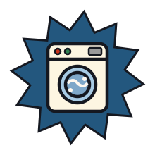
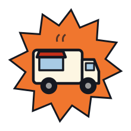
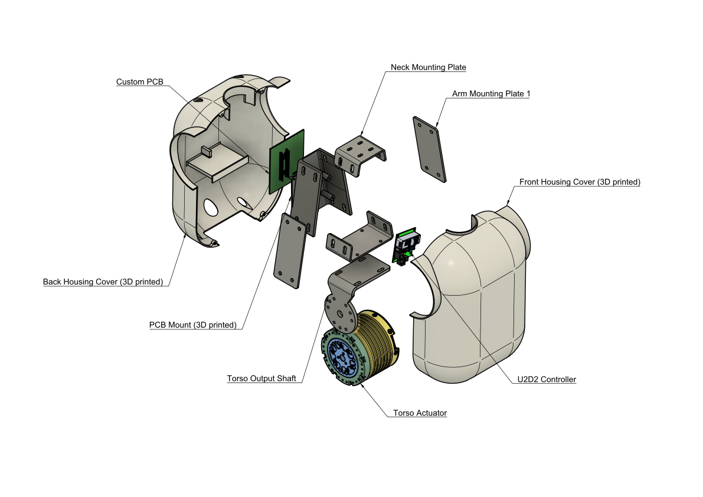
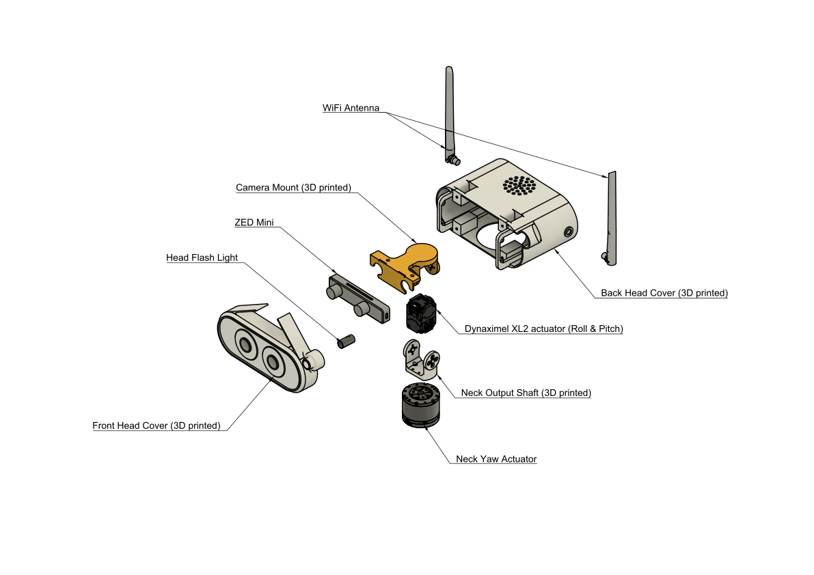

From an empty bench to a robot that powers on — in order: the materials, the bill of materials, the mechanical build, and the wiring. Firmware and calibration live with the software →

Plan for roughly a week of near-continuous printing, and 2–3 printers if you want it done in that week — that is an estimate from building it, not a measured figure, so treat it as a planning number. Most parts fit a standard bed, but the base and body housings need a large-format machine (Bambu H2D / H2S class). The BOM buys 7 spools: 4 Jade White for covers, sensor mounts and trim, 2 Black for the high-wear ORCA hand structure, 1 Light Gray for accents. It buys PLA Basic; the arm housings are separately specified in PETG at about 260 g per arm (mechanical/arm_housing/), which the filament line does not yet cover.
Printing is the longest single task in the build — plan for about a week of near-continuous running. Start the parts the day you order actuators, and do the electrical work while they run.
A large-format printer is needed for the base and the body housings — a Bambu H2D or H2S class machine. Everything else fits a standard bed, so a common split is one large-format machine for the big shells and one or two normal printers running the rest in parallel.
White PLA or PETG for covers and mounts — they are cosmetic and lightly loaded. Black for the ORCA hand structure, which is the high-wear part of the whole robot: the fingers see every contact the robot ever makes.
Never hand-edit a printed part. Every mesh is generated from
mabel_full.xml; if a part is wrong, fix the model and regenerate, or the
robot and its digital twin quietly stop being the same robot.
Hex drivers, a crimper, a soldering iron, a multimeter — and a current-limited bench supply for every first energization. No machine shop: sheet parts are ordered from any fab service (drawings in the BOM).
Hex drivers, a crimper, a soldering iron and a multimeter cover the whole build. The one tool people skip and regret is the last one.
A current-limited bench supply is not optional. Every first energization — every actuator, every board, the first time the lift moves — goes through it with the current limit set low. A miswired bus that would cook a motor instead just trips the limit, and you find the fault with everything still alive.
No machine shop is needed. Sheet-metal parts are ordered from any fab service using the drawings in the bill of materials, and everything else is printed or bought.
A Mac or Linux laptop runs the full simulation twin and every desktop tool. Ubuntu on the Jetson runs the robot — ROS 2 is only needed there.
Two computers, and only one of them has to be Linux.
Your laptop runs the full MuJoCo twin and every desktop tool — the Control Studio, the Data Studio, the Policy Studio. That is the whole development loop, and none of it needs the robot to exist yet.
The Jetson on the robot runs Ubuntu and is the only place ROS 2 is needed. The split matters: it means a contributor with a MacBook and no hardware can still write, run and test control code against the same stack the robot runs.
Basic 3D printing, a terminal, light electronics. Prove every motion in the twin before it ever runs on hardware.
Basic 3D printing, comfort in a terminal, and light electronics. That is the honest list — MABEL is deliberately built from commodity smart actuators and off-the-shelf boards so that no custom PCB design or machining skill stands between you and a robot.
The habit that matters more than any skill: prove every motion in the twin first. The simulator runs the production control code, so a trajectory that behaves there behaves on hardware — and a mistake there costs nothing but a rerun.
Bring the robot up with torque disabled, one bus ID at a time, and let the current-limited supply catch what your attention misses.

Eight subsystems make up the core bill. Hover a slice — or a row — and the actual components inside it appear below.
| Subsystem | Share | Cost |
|---|---|---|
| Mobile base | 28% | $2,272 |
| Body / torso | 11% | $889 |
| Arms - both | 33% | $2,622 |
| Hands - both | 15% | $1,195 |
| Neck / head | 3% | $235 |
| Structural hardware | 2% | $184 |
| Electronics, power & cabling | 6% | $500 |
| 3D printed material | 2% | $161 |
| Core total | $8,058 |
Search it, filter by subsystem, and hover any row for a preview. Prices are as paid on 31 July 2026.
Prices move.NVIDIA raised every Jetson price 33–101% on 22 July 2026 — the identical robot went from $12,969 to $14,968 overnight. Compute is a choice here, not a component: the bill treats it that way.
Printing is the long pole — roughly a week of near-continuous running, and the base and body housings need a large-format bed. Start the parts the day you order actuators, and build the electrical kits while they run.
7 spools of filament and roughly a week of printing (an estimate, not a measurement) — the base and body housings need a large-format bed. Every mesh is generated from the MuJoCo model mabel_full.xml — never hand-edit a printed part, regenerate it.
Bottom-up. Never mount a module onto one you haven't range-tested — a base with a twisted swerve module is invisible once the body is on it.
Assign every CAN and serial ID before the part goes into the chain, one device powered at a time. A wrong ID buried mid-arm means taking the arm apart.
Every actuator stays limp until its module is mechanically complete and its limits are set. Bring the whole robot up with torque disabled.
What these drawings are. The exploded views below are the authority for which parts exist and in what order they stack. A fully itemized fastener and torque schedule has not been published yet — use the hardware that ships with each actuator, and match the drawing. Published drawings today: body and head; the remaining five modules are documented as build sequences here and in the build guide.
Three independently steered modules in a delta layout — the rolling foundation everything else stacks onto.
A cascaded Z-column that adds 0.635 m of vertical travel — counter height to over a table.
The lift changes the base's limits.Raising the column raises the centre of mass, so the tip-safe speed and braking envelope tightens with height. That coupling is modelled in whole-body control — it is not something you tune out mechanically.
The torso that leans, and the frame that carries the arms, the neck, and the body electronics.

Two 7-DOF OpenArm-derived arms on quasi-direct-drive motors — low gearing, real torque control, back-drivable by hand.
can0, right on can1. Do not merge them onto one chain.Two open-source ORCA hands — five tendon-routed fingers each, 17 actuated DOF per hand on a single serial chain.
A 3-DOF neck and the stereo eyes it aims. Yaw runs on the body CAN bus; roll and pitch are a pair of Dynamixel servos on TTL.

Bring the neck up limp.The X-series servos latch torque-enable across a host reconnect — a previous session that energised the neck leaves it stiff at the next bring-up. The driver asserts the safe limp state on connect; do not defeat it while assembling.
Custom base and body boards tie every actuator onto one low-latency local network — CAN for the motor buses, Ethernet and USB 3 for the bandwidth.
can0 / can1. Terminate each chain at both ends.Mechanically complete is not commissioned. Bring the robot up limp, one bus at a time, then hand over to the build guide for firmware and calibration.
No — and you shouldn't start with it. The entire stack runs against the
MuJoCo twin on a laptop: cd server && ./run.sh boots physics, cameras,
the teleop gateway and a browser control studio. Phones, headsets and browsers
connect to the twin exactly as they later connect to the robot — same
ports, same wire contract, and the clients can't tell which is live.
Prove every motion in the twin first, then order parts. The golden rule of the whole build. Replication wiki · 05 Software →
Work the bus, not the motor:
① Bus up? ./can_up.sh then ./can_scan.sh — 1 Mbit everywhere.
② Termination: ~60 Ω measured across CAN-H/L (two 120 Ω ends in parallel).
③ ID clash: assign IDs one device powered at a time — expect 6 on the base,
7 per arm, 17 per hand chain.
④ First unreachable ID in a chain = check that connector; everything
downstream vanishes with it.
The two wrist boards are identical, so USB enumerates them in arrival
order — left becomes right after a reboot. Pin each camera by its hub
port (udev rules ship in hardware_bridge/install/) and keep
both on one powered USB-3 hub.
Slow or stuttering? Drop to 640×480 — teleop wants latency, not pixels; the measured glass-to-glass budget is dominated by encode, not resolution.
The MJCF (mabel_full.xml) is the single source of truth —
the URDF, the web GLB, the phone/headset rigs and the tip-over constants are all
generated from it. Edit the model and skip the regeneration, and every
viewer silently keeps showing the old body.
Re-run the §8 pipeline in order (MJCF → URDF → GLB → rigs → mirror), then re-check the CoM constants. Never hand-edit a derived file.